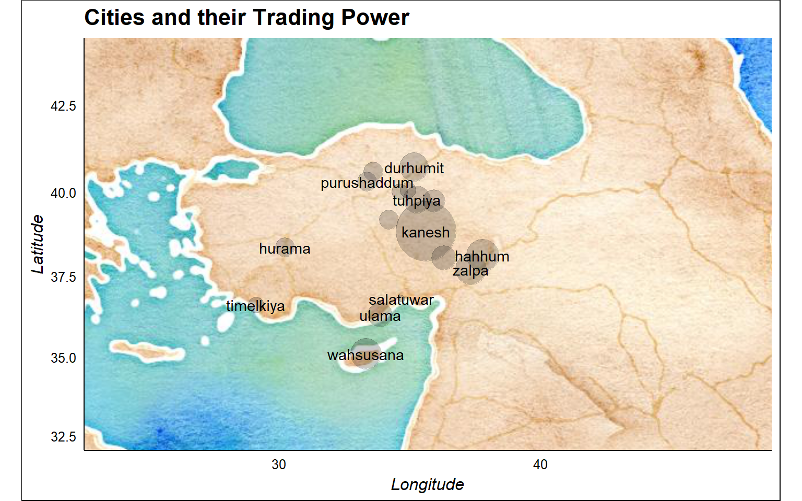
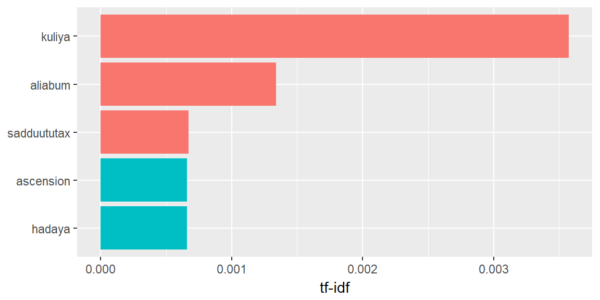

2018.27.02
I analyze a large dataset of commercial records produced by Assyrian merchants in the 19th Century BCE…
This is a text mining project for Unstructured Text Data Course I take from Business Analytics department of Central European University. I don’t have any history, archeology or any social science background other than watching Indiana Jones and playing Lara Croft’s Tomb Raider. On the other hand, I did some google search to give you the context and placed them here.
The aim of the project is to make sense of some text which I have no idea about. However, If you give feedback I will be happy to update the post.
This is about an acient language from the Bronze Age, meaning like 4000 years ago.
this is how the language sounded like…
2018.01.03
And this is how it looked like:

2018.02.03
Some smart people decrypted these languages. For example
nu ninda en e-iz-za-te-ni wa-a-tar-ma e-ku-ut-te-ni
Translation:
“Now you will eat bread and drink water”
wa-a-tar means water. ninda means bread. Quite familiar isn’t it?
Our data looks like this:
This is a txt file.
But how did I get here? It started with a tweet by Gabor Bekes:

I contacted the authors of this academic paper from the University of Virginia. They were so kind and provided me these text files:

Archeologists have escavated these tablets during the past 200 years.
An escavated tablet looks like this:
These people lived 4000 years ago in the Middle East and the Asia Minor
2018.03.05
We will start by loading our documents.
#we have a collection of 4 documents
library(dplyr)
oare1 <- readLines("OARE_01.txt") %>%
data_frame(file = 'OARE_1') %>%
rename('word' = '.')
oare2 <- readLines("OARE_02.txt") %>%
data_frame(file = 'OARE_2') %>%
rename('word' = '.')
oare3 <- readLines("OARE_03.txt") %>%
data_frame(file = 'OARE_3') %>%
rename('word' = '.')
oare4 <- readLines("OARE_04.txt") %>%
data_frame(file = 'OARE_4') %>%
rename('word' = '.')
txt <- bind_rows(list(oare1, oare2, oare3, oare4))
colnames(txt) <- c("text", "title")How many tablets do we have? We can simply count the Creators.
library(stringr)
str_c("We have ", nrow(txt[grep('^Creator', txt$text),]), " tablets") %>%
pander::pander()We have 609 tablets
We have many unwanted words and phrases. Some simple regular expressions will help us.
#see the lines give the information regarding the Creator of the record
head(txt[grep('^Creator', txt$text),], 3)## # A tibble: 3 x 2
## text title
## <chr> <chr>
## 1 Creator(s): Stratford, Edward P. OARE_1
## 2 Creator(s): Stratford, Edward P. OARE_1
## 3 "Creator(s): Stratford, Edward P. (2016-12-24) " OARE_1#removing them
txt <- txt %>%
anti_join(txt[grep('^Creator', txt$text),])This is one way of cleaning such unwanted words… We can create a list of them, match and then anti_join easily.
2018.03.06
toMatch is a vector of unwanted character strings with some regular expressions just like above example. We remove them from our text below.
library(pander)
matches <- unique (grep(paste(toMatch,collapse="|"),
txt$text, value=TRUE))
#removing them
txt <- txt %>%
anti_join(data.frame(text = matches))
original_text <- txt # keep an untouched copy
#take a look at one commercial record now
pander(txt[149:150, 1])| text |
|---|
| 4-6I entrusted 15 minas 54 shekels silver under my seal, 16 shekels its shipping charge, to Assur-samsi on behalf of Al-ili. |
| 7-8There, make sure the representative of Al-ili recieves the silver and it’s shipping charge. 9-11I gave 5 1/2 minas silver of my own to Assur-samsi for purchases. |
Here we are reading a business letter from a guy called Abela to Idnaya. Just a quick look makes it clear that these people were not savages at all. Freight charges, clearing a debt on behalf of another entity and stamps (seals) are all in place.
The paragraph is almost clean. Next, we need to remove the numbers.
2018.03.07
# Remove numbers using removeNumber function from tm library
library(tm)
txt$text <- txt$text %>%
removeNumbers() %>%
removePunctuation() %>%
tolower() %>% #in fact unnest_tokens function handling this
stripWhitespace()Now let’s have a quick look at the word frequencies
library(tidytext)
library(ggplot2)
library(ggthemes)
txt %>%
unnest_tokens(word, text) %>%
anti_join(stop_words) %>%
count(word, sort = TRUE) %>%
filter(n > 150) %>%
mutate(word = reorder(word, n)) %>%
ggplot(aes(word, n)) + geom_col() + xlab(NULL) + coord_flip() +
ggtitle("Word Frequency")It looks like these people were sending and receiving textiles, tin and copper. Transportation was mostly depending on donkeys and the payments were in silvers most of the time. The units of measurement (like the weight) were shekels, minas and talents. Example: Abele sends 5 talents of gold to Ibalaya for 200 shekels of silver, on behalf of Iddin-Istar.
2018.03.08
Looking at the frequency plot again, what does pusuken mean? It is repeating more than 500 times…
head(original_text[str_detect(original_text$text, "Pusu-ken"), 1], 4) %>%
pander()| text |
|---|
| 1-3To Amur-Istar and Pusu-ken from Kuzallum: |
| 1-2From su-hubur to Pusu-ken: |
| 1-7Zupa seized us against the sons of Pusu-ken and Zupa said to the sons of Pusu-ken, “Your father took the silver stated in my sealed tablets. |
| 7-9Why is it that Suen-re’i detains me? 10-18The sons of Pusu-ken (responded): “Our father received the silver of the sealed tablet of Zupa. Release it and we will give you the matter.” |
A family business! It turns out Pusuken was the most famous businessman. Probably he was the leader of a powerful family controlling most of the trade happening in the region. His sons were handling the transactions. Assurnada and Assurmalik are the other two notable tradesmen coming out from the frequency table.
Another frequent word is ‘son’. Let’s find out why.
tail(original_text[str_detect(original_text$text, "son"), 1], 5)[c(1, 3), ] %>%
pander()| text |
|---|
| Iddin-Istar son of Assur-nada owes 5 5/6 |
| 15-18Witnesses: Burqanim son of Kakkabanim son of su-Istar son of suaya |
son of Assurnada, son of Inahili, son of Kakkabanim… Of course, these are family names. That’s why it repeats a lot.
2018.03.10
Now we have a fairly good understanding of the most frequent words. Let’s get a big picture of the ancient cities mentioned in our text.
Ancient city names are easily available online. I created a dataframe called “Citites” which contain their geolocations. We will join information into this dataframe from our text. Our objective is to come up with some metric which can represent trading power of these cities, and visualize them.
library(tidyr)
cities <- cities %>%
left_join(original_text %>%
unnest_tokens(word, text) %>%
filter(word %in% tolower(cities$cityName)) %>%
count(word, sort = TRUE) %>%
rename(cityName = word),
by = 'cityName')
cities$n <- replace_na(cities$n, 0)cities <- cities %>%
select(cityName, latitude, longitude, n) %>%
rename(Occurance_In_Text = n) %>%
arrange(desc(Occurance_In_Text))
#cities to plot
cities_in_text <- cities %>%
filter(Occurance_In_Text > 0) We can create a data structure to understand the co occurance of these cities with words like “to” and “from” in each line. It can give us a naive estimate of goods and services coming in and out. “to” stands for import, “from” stands for export, summation of “in”+“at” stands for inventory.
Trading Power = EXPORT + INVENTORY - IMPORT
pointer <- c("to", "from", "in", "at")
for(j in 1:length(pointer)) {
for(i in 1:length(cities_in_text$cityName)) {
cities_in_text[i, pointer[j]] <- nrow(txt[grep(
str_c(pointer[j], ' ', cities_in_text$cityName[i]),
txt$text), ])}
}
cities_in_text <- cities_in_text %>%
mutate(import = to,
export = from,
inventory = `in` + at,
trade_power = export + inventory - import) %>%
select(cityName, Occurance_In_Text, trade_power, latitude, longitude) %>%
arrange(desc(trade_power))
cities_in_text %>%
select(cityName, Occurance_In_Text, trade_power) %>%
head() %>%
pander::pander()| cityName | Occurance_In_Text | trade_power |
|---|---|---|
| kanesh | 87 | 34 |
| hahhum | 15 | 8 |
| wahsusana | 31 | 7 |
| zalpa | 7 | 7 |
| durhumit | 27 | 6 |
| tuhpiya | 10 | 5 |
library(ggmap)
library(ggthemes)
#setup map borders and select your map style
lat <- cities$latitude
long <- cities$longitude
bbox <- make_bbox(long,lat,f=0.5)
b <- get_map(bbox,maptype="watercolor",source="google")
#plot the cities mentioned in the text
ggmap(b) + geom_point(data = cities_in_text,
aes(longitude, latitude, size=trade_power),alpha=0.2, show.legend = F) +
scale_size_continuous(range = c(2, 20)) +
labs(x = "Longitude", y = "Latitude",
title="Cities and their Trading Power", color = "Type") +
geom_text(data = cities_in_text, aes(longitude, latitude, label = cityName),
check_overlap = TRUE) +
theme_gdocs()
You are looking at the Asia Minor, Mezzopotamia, the Middle East, Greece and the southeast Mediterrenean Sea. The largest islands you see are the island of Crete and Cyprus.
The city of Kanesh is our biggest hub. Probably a capital city. And our famous Pusuken family have lived here.
The people who wrote these tablets had access to the sea ports in the south. So we are talking about some complicated trade network here. Probably Pharaohs of ancient Egypt, Phonecians and Mycenaeans are all playing a role at some point.
2018.03.11
We know the most frequent words in these documents. How about the most important ones? We can try tfidf here.
oare_words <- txt %>%
unnest_tokens(word, text) %>%
count(title, word, sort = TRUE) %>%
ungroup()
total_words <- oare_words %>%
group_by(title) %>%
summarize(total = sum(n))
oare_words <- left_join(oare_words, total_words, by = 'title')oare_stop_words <- data.frame(word = c("gkt", "sec", "oaa", "ca", "g"), lexicon = 'oare')
oare_words <- oare_words %>%
anti_join(oare_stop_words) %>%
bind_tf_idf(word, title, n)
oare_words %>%
select(-total) %>%
arrange(desc(tf_idf)) %>%
head(10) %>%
select(title, word, n, tf_idf)oare_words %>%
arrange(desc(tf_idf)) %>%
mutate(word = factor(word, levels = rev(unique(word)))) %>%
#group_by(title) %>%
top_n(5) %>%
#ungroup %>%
ggplot(aes(word, tf_idf, fill = title)) +
geom_col(show.legend = FALSE) +
labs(x = NULL, y = "tf-idf") +
#facet_wrap(~title, ncol = 2, scales = "free") +
coord_flip() + theme_gray()
tf-idf algorithm decreases the weight for commonly used words and increases the weight for words that are not used very much.
We had ruling family names in the word frequency plot. They were the Pusuken, Assurnada and Assurmalik families.
Now we have some other names being reported in tfidf plots. And by far, the most significant names are Kuliya and Aliabum. These names are more important then the powerful families according to the algorithm. They are also more important then gold, silver and the trade items. Maybe they are not mentioned that much. But they seem to play some significant role. This is really curious. Who are these people?
head(original_text[str_detect(original_text$text, "Kuliya"), 1], 15)[4, ] %>%
pander::pander()| text |
|---|
| Whoever has brought in loaded donkeys via the narrow track in order to do business over there, even when he is a resident of a karum, make him pay 3 shekels of silver per mina and let Kuliya personally bring it here. |
Kuliya is a servant of Pusuken family. He delivers messages, goods and payments. He is Kuliya, son of Aliabum. Loyal servant of the sons of Pusuken. He takes the caravans from Kanesh and brings to the city of Ulama in the south. There he gives the cargo to the representatives of Sea People. Aliabum is his father. They call him Kuliya, son of Aliabum. This trade network can not function without him.
An unsual autopsy of ancient trade records
library(tidyr)
library(igraph)
library(ggraph)
#create bigram
oare_bigrams <- txt %>%
unnest_tokens(bigram, text, token = "ngrams", n = 2)
#separate them
bigrams_separated <- oare_bigrams %>%
separate(bigram, c("word1", "word2"), sep = " ")
#filter out stopwords
bigrams_filtered <- bigrams_separated %>%
filter(!word1 %in% stop_words$word) %>%
filter(!word2 %in% stop_words$word)
#bigram counts:
bigram_counts <- bigrams_filtered %>%
count(word1, word2, sort = TRUE)
#create a graph
bigram_graph <- bigram_counts %>%
filter(n > 30) %>%
graph_from_data_frame()
#plot the graph
a <- grid::arrow(type = "closed", length = unit(.15, "inches"))
set.seed(2016)
ggraph(bigram_graph, layout = "fr") +
geom_edge_link(aes(edge_alpha = n), show.legend = FALSE,
arrow = a, end_cap = circle(.07, 'inches')) +
geom_node_point(color = "lightblue", size = 5) +
geom_node_text(aes(label = name), vjust = 1, hjust = 1) +
theme_void()Kuliya wakes up early morning with the sound of black >> donkeys. They are on the way to Ulama.
The main cargo is 300 kutanum >> textiles. It worths more than 10 talents >> and 50 minas >> of silver according to the tablet he is carrying with him. The letter starts with Dear >> brothers again. He doesn’t understand why sons of Pusuken call these bastards brother all the time.
Transport >> tariff is 60 shekels >> of silver. They will report it to the colony >> office in Ulama when they arrive, with approved delivery notice. He will deliver a huge profit to the family to clear all the claims >> outstanding
This network plot is quite informative. We see the monatery system around the silver and the order of scale for measurement. Talent is the biggest and probably a refined silver is the most valuable. Shekels should be like cents. Shekel - Minas - Silver is the strongest triangle of payment. Textile measurements are in kutanum. Strong presence of colony office is indicating a regulating superpower, most probably the Empire.
money <- data.frame(word = c("tin", "minas", "talent", "talents", "shekels", "mina", "refined", "silver"))2018.03.13
How do these letters feel like? Mostly positive or negative language? And which words are contributing most to these sentiments?
I am going to use a special lexicon built for modern financial analysis. This is a kind of lexicon which you can expect to see in an analysis of stock market trading.
I am curious how it can perform on 4000 year old commercial records.
library(gridExtra)
#first get the tidy format
tidy_oare <- txt %>%
group_by(title) %>%
ungroup() %>%
unnest_tokens(word, text) %>%
#remove silver and gold because they dont give sentiment here
anti_join(data.frame(word = c('silver', 'gold'))) %>%
anti_join(stop_words) %>%
mutate(linenumber = row_number())
#build afinn bing and nrc lexicon sentiments
afinn <- tidy_oare %>%
inner_join(get_sentiments("afinn")) %>%
group_by(index = linenumber %/% 150) %>%
summarise(sentiment = sum(score)) %>%
mutate(method = "AFINN")
bing_and_nrc <- bind_rows(tidy_oare %>%
inner_join(get_sentiments("bing")) %>%
mutate(method = "Bing et al."),
tidy_oare %>%
inner_join(get_sentiments("nrc") %>%
filter(sentiment %in% c("positive",
"negative"))) %>%
mutate(method = "NRC")) %>%
count(method, index = linenumber %/% 150, sentiment) %>%
spread(sentiment, n, fill = 0) %>%
mutate(sentiment = positive - negative)
#plot the sentiments together
p1 <- bind_rows(afinn,
bing_and_nrc) %>%
ggplot(aes(index, sentiment, fill = method)) +
geom_col(show.legend = FALSE) +
facet_wrap(~method, ncol = 1, scales = "free_y") +
theme_fivethirtyeight()
p2 <- tidy_oare %>%
count(word) %>%
inner_join(get_sentiments("loughran"), by = "word") %>%
filter(sentiment %in% c("positive",
"negative",
"constrining",
"uncertainty")) %>%
group_by(sentiment) %>%
top_n(5, n) %>%
ungroup() %>%
mutate(word = reorder(word, n)) %>%
ggplot(aes(word, n)) +
geom_col() +
coord_flip() +
facet_wrap(~ sentiment, scales = "free") + theme_fivethirtyeight() +
theme(axis.text.x=element_blank()) + scale_fill_brewer(palette="Set3")
grid.arrange(p1, p2, ncol = 2)We see that we have quite many positive sentiment as well as negatives. And the financial analysis lexicon is giving accurate matches. For example seizing someone because of his debts.
xxxxxxxxxxxxxxxxxxxxxxxxxxxxxxxxxxxxxxxxxxxxxxxxxxxxxxxxxxxxxxxxxxxxxxxxxxxxxxxxxxxxxx